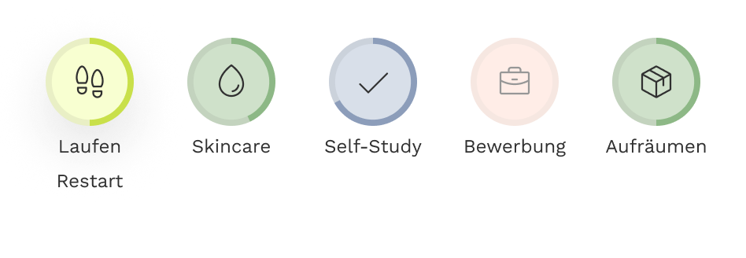

02 · Concept
A few routines that stick
You choose how many routines to follow. The app recommends five at most, to keep it doable.
The goal: repeat a few routines until they run on their own. To-dos and an AI agent come later. The core routines stay at the center.
And it should be an app people want to open. Many people with ADHD care a lot about how things look, so ReSway is playful and interactive.
